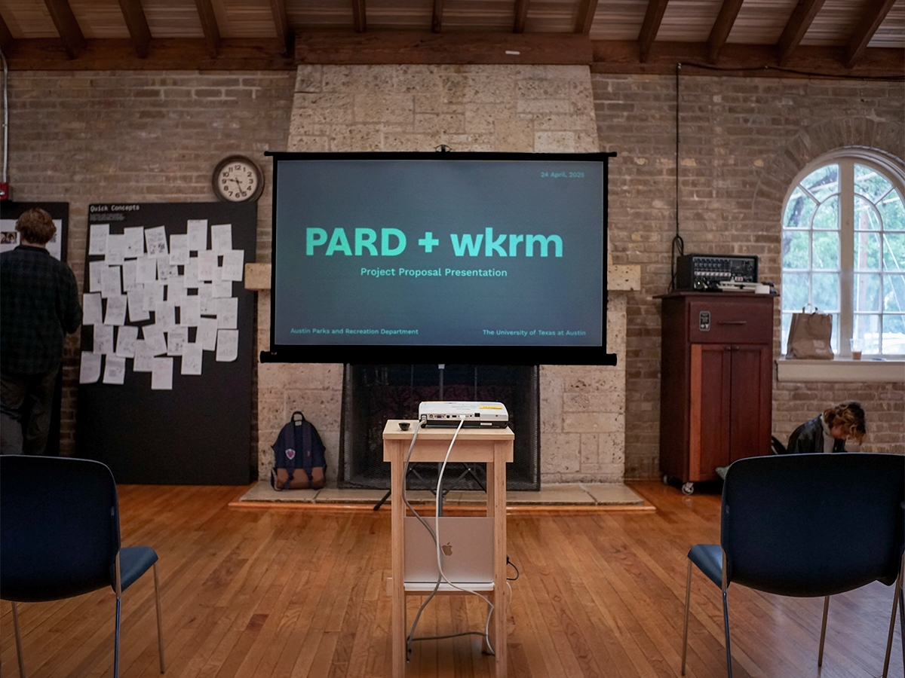
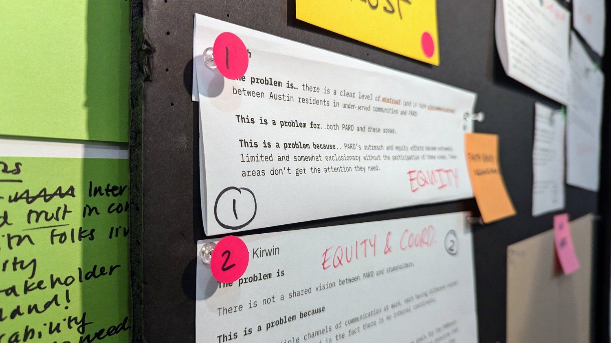
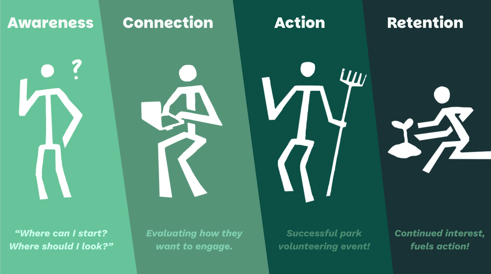

PARD + wkrm
Dashboard Design, User Research & Synthesis, Presentation
The Austin Parks and Recreation Department manages over 300 parks. Volunteer sign-ups lived in email chains, work hours were reviewed only once a year, and underserved parks had no visibility as to where help was truly needed. PARD asked us to explore how volunteer coordination could be unified across its divisions.
How might we create an easier volunteering experience for both PARD and the people of Austin?
The Problem
We organized PARD’s challenges into three key themes — Coordination, Data, and Equity — which guided the rest of our project research.



User Research
I co-led interviews with 8 PARD stakeholders across several divisions; coordinators, program managers, a community organizer, and a horticulture lead.


We also volunteered at “It’s My Park Day” to observe the volunteer check-in process firsthand as well as survey the participants.


Visits to Givens District Park and Sanchez School Park reframed our equity question: these weren’t neglected communities. They were proud neighborhoods that needed PARD to support what was already there, not “renew” it with something else.
Conclusions
Journey and ecosystem mapping with our stakeholders revealed pain points across four stages — Awareness, Connection, Action, and Retention — which became the pillars that structured our proposals.

Dashboard Design
I designed a Figma prototype of a new PARD internal dashboard that serves volunteer hours, an equity heat map, events, and a flow to approve volunteer opportunities. This aimed to increase transparency across departments, establish faster communication between opportunity seekers and admin, as well as address inequality in underserved parks.


Constraints
PARD is a city department where divisions don’t easily share tools, data formats, or definitions of success. Designing for that kind of organizational complexity required deep research and managing several stakeholders’ needs. We had limited time to complete research, ideation, development, and present these materials. We also had limited direct access to external stakeholders, such as PARKners, who help manage larger parks and Greenland areas, requiring us to reconstruct their needs and perspective from outside sources.

Outcome
We presented ↗ in front of the City of Austin and the Parks and Rec department’s executive leadership. They stayed for 45 minutes after our presentation to keep discussing the work. Leadership said our insights would likely influence city-wide initiatives in the coming years. The four-pillar framework gave them shared language to advocate for resources internally and has already led to developments on a shared internal PARD dashboard.

“Your work was worthwhile … your insights and concepts will likely make their way into city-wide initiatives.”
“Many of the PARD staff stayed at the Rec Center and discussed your work for almost 45 minutes.”← Back